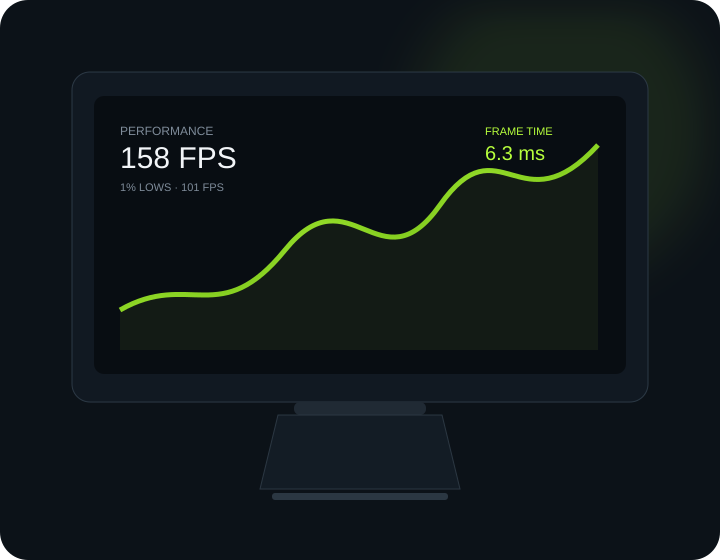
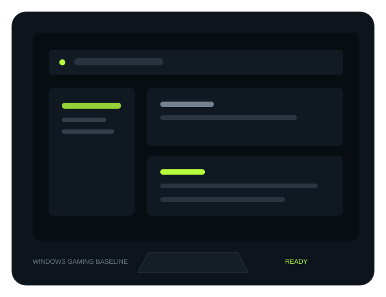

Prepare
Update drivers, Windows and firmware where appropriate. Create a restore point or backup before advanced changes.
A clean, practical library for better FPS, lower input latency and more stable gaming on Windows. Start with the fundamentals, measure the result, then go deeper.

Most “FPS boost” pages throw dozens of registry edits at you. FrameForge takes a different approach: fix the basics first, change one variable at a time and keep a benchmark so you know what actually helped.
Update drivers, Windows and firmware where appropriate. Create a restore point or backup before advanced changes.
Work through graphics, Windows, latency and network settings that match your hardware and game.
Compare average FPS, 1% lows, frametime, temperatures and network stability before keeping a tweak.

Get the operating system ready for gaming before touching advanced tweaks. This section focuses on settings you can understand, test and undo.
Practical guides for FPS, frametime and responsiveness.
Learn how to tell the difference between a GPU limit, CPU limit, thermal problem, shader stutter and background load.
Refresh rate, V-Sync, FPS caps, polling rate and supported low-latency features.
Read guide →Use official NVIDIA or AMD sources and know when a clean installation is useful.
Understand the connection problems that Windows “FPS tweaks” cannot fix.
Ethernet, local congestion, Wi‑Fi interference, server region, packet loss and jitter can all affect how a game feels. Test them separately instead of chasing registry “ping tweaks”.
Confirm Windows is actually running the monitor at its intended refresh rate.
A stable frametime can feel better than a higher but erratic FPS number.
Use supported features such as NVIDIA Reflex or AMD Anti-Lag 2 when your game supports them.
Test polling rates and settings rather than assuming the highest number is always best.
Run the same game scene or benchmark before and after a change. Keep the result if it helps. Revert it if it doesn't.
Open benchmark checklist →Game-specific guides will be added as the library grows.
Performance Mode, FPS consistency, input latency and Windows basics.
Explore PC guide →Windows, display and responsiveness fundamentals for competitive play.
Guide coming nextUnderstand CPU limits, graphics settings and stable frame pacing.
Guide coming nextGPU load, shaders, memory, thermals and network checks.
Guide coming nextAtlasOS is an advanced Windows modification. It may reduce background activity, but it requires a reinstall through its supported process and is not a guaranteed FPS boost.
Read the AtlasOS gaming guide →FrameForge is an independent gaming resource. We focus on explanations, measurements and practical configuration rather than promising impossible “one-click FPS boosts”.